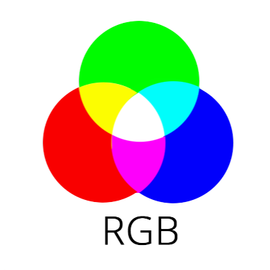
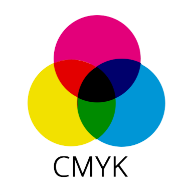

Kleurmodellen zijn manieren om kleuren te beschrijven en te maken. Twee veelgebruikte kleurmodellen zijn RGB en CMY-K. Hieronder volgt een eenvoudige uitleg van deze modellen.
Het RGB-kleurmodel wordt gebruikt voor schermen zoals tv's en computers. RGB staat voor Rood, Groen en Blauw. Door deze kleuren te mengen in verschillende hoeveelheden, kunnen veel andere kleuren worden gemaakt.
Bijvoorbeeld:
Alle drie samen geven wit licht.
Het CMY-K-kleurmodel wordt gebruikt voor drukwerk. CMY-K staat voor Cyaan, Magenta, Geel (Yellow) en Zwart (Key). Dit model werkt door kleuren weg te nemen (subtraheren) van wit licht om andere kleuren te maken.
Bijvoorbeeld:
Zwart (K) wordt toegevoegd om diepere zwarttinten te krijgen.
Een pixel is het kleinste onderdeel van een beeld op een scherm. De resolutie van een beeld verwijst naar het aantal pixels in elke richting (breedte × hoogte). Hoe meer pixels, hoe scherper het beeld.
Voor een visuele uitleg, bekijk de onderstaande video over de modellen RGB, CMYK en PMS: